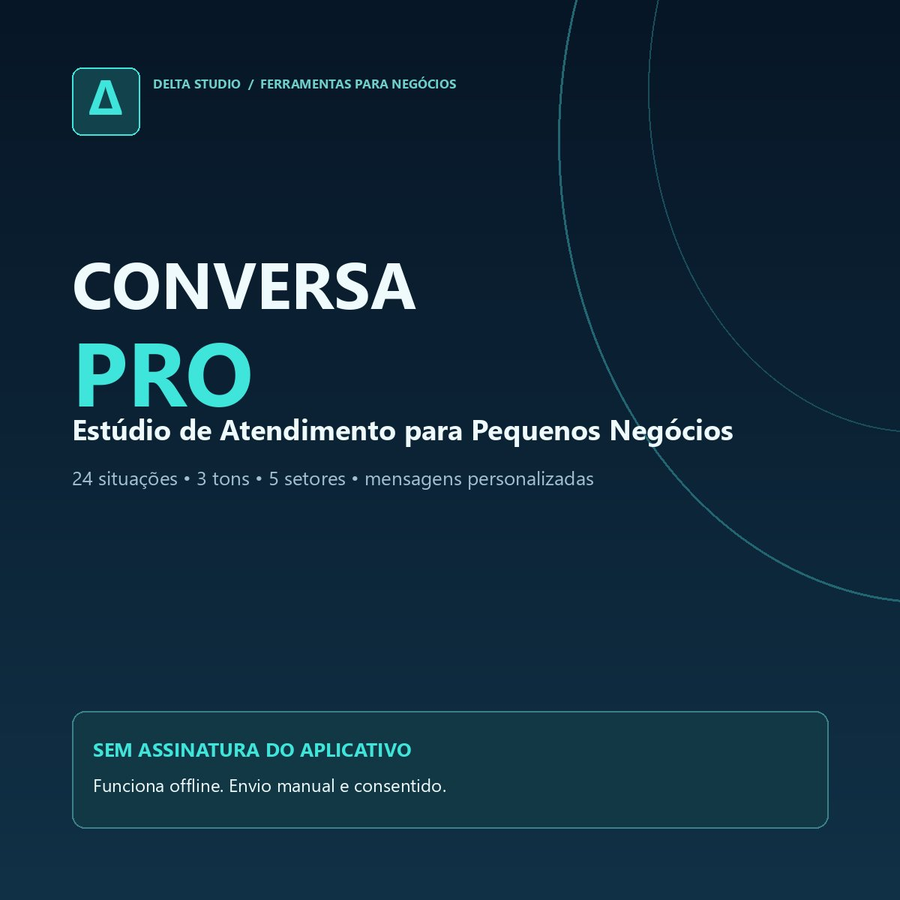
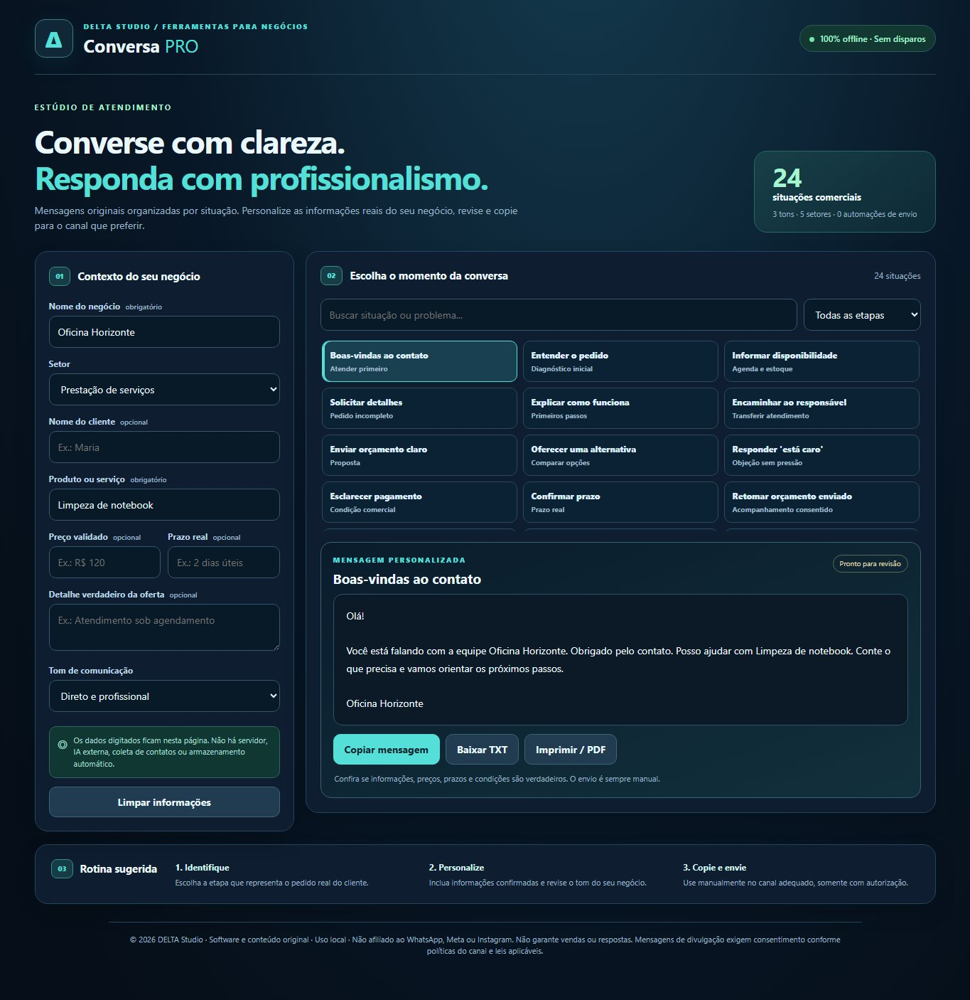
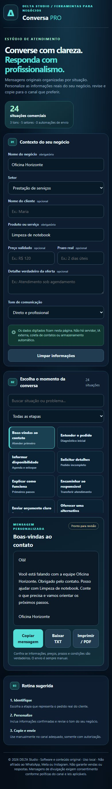
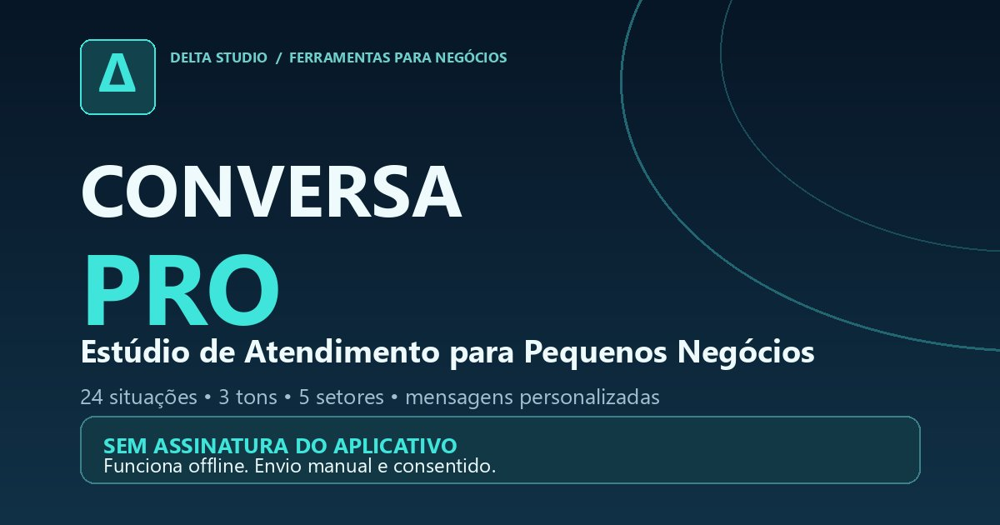

Atenda melhor. Sem respostas improvisadas.
Organize o que dizer em cada etapa da conversa com seu cliente. São 24 situações comerciais, três tons de comunicação e perguntas adequadas a cinco setores, com textos que você personaliza, revisa e envia manualmente.
Pagamento processado exclusivamente pela Kiwify. Demonstração gratuita não inclui o produto completo.

Textos úteis, sem promessas mágicas.
Da primeira dúvida à entrega
Boas-vindas, explicação do serviço, proposta, objeções, prazo, agendamento, atualizações e reclamações.
Seu negócio, sua voz
Preencha serviço, nome da empresa, preço e prazo confirmados. Escolha linguagem direta, acolhedora ou formal.
Você controla o envio
Copie para o canal apropriado, exporte em TXT ou imprima em PDF. O aplicativo não acessa conversas, contatos nem faz disparos.



Um pacote simples de utilizar.
Aplicativo local
Arquivos HTML, CSS e JavaScript que funcionam juntos em navegadores recentes, sem assinatura do aplicativo.
Guia original em PDF
Sete páginas para organizar atendimento, escolher o tom, acompanhar clientes e manter comunicação transparente.
Manual e licença
Instruções para extrair e abrir o aplicativo, limites de uso, informações de privacidade e condições de licença.
Veja uma mensagem antes de decidir.
Teste três exemplos com dados fictícios. Se a abordagem fizer sentido, o software completo está disponível no checkout oficial.
Abrir demonstração gratuita →Pagamento único de R$ 29,90 à vista; consulte parcelas e taxas no checkout. Sete dias para solicitar reembolso.
Perguntas frequentes
O aplicativo envia mensagens por WhatsApp automaticamente?
Não. Ele gera rascunhos para revisão e cópia manual. Não há integração oficial ou extração de contatos.
Meus dados digitados são enviados à DELTA?
Não. O aplicativo comercial funciona localmente no navegador, sem API ou telemetria. Arquivos exportados devem ser protegidos pelo próprio usuário.
Preciso contratar assinatura?
O aplicativo funciona sem assinatura, depois da aquisição legítima. O pagamento único é de R$ 29,90 à vista, sem mensalidade do aplicativo. Consulte condições no checkout oficial da Kiwify.
É um curso de inteligência artificial?
Não. É um software offline com 24 modelos originais de situações comerciais e um guia PDF.
Posso enviar qualquer mensagem para qualquer contato?
Não. É necessário respeitar as políticas dos canais, a legislação de proteção de dados e o consentimento aplicável, especialmente para mensagens de iniciativa da empresa.
O produto já está à venda?
Sim. O checkout oficial é administrado pela Kiwify. Após pagamento aprovado, a entrega digital fica disponível na área de membros. Nenhum pagamento é feito diretamente neste site.
Como solicitar suporte ao produto?
Escreva para suporte@deltamusic.com.br e informe o nome do produto e a dificuldade encontrada. Não envie senhas, códigos de acesso ou dados de cartão.